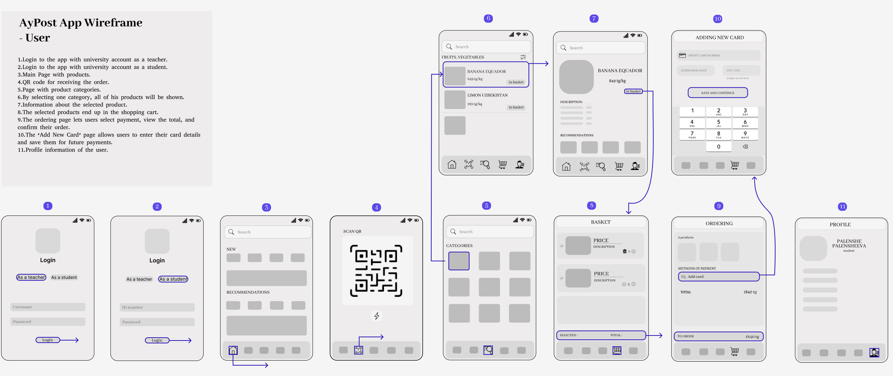
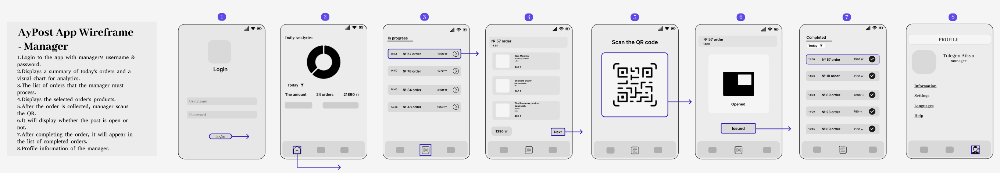
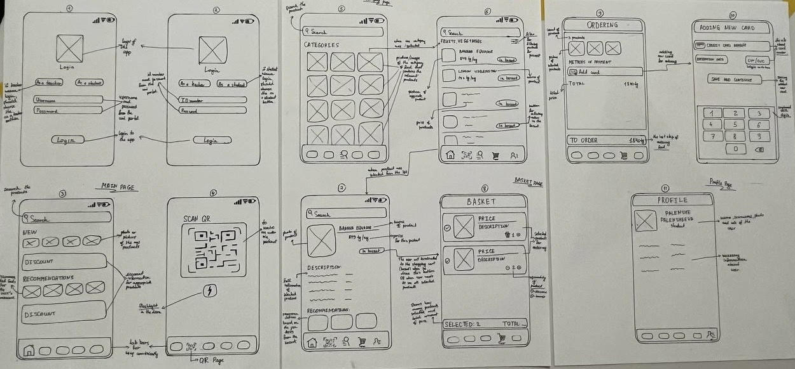

The goal of this project is to redesign the shopping experience at the SDU market to minimize long lines and improve overall customer satisfaction. By understanding customer needs and preferences, we aim to design a user-centered solution that enhances convenience and reduces wait times.
Participants were SDU students who regularly visit the SDU market. They typically visit the market to purchase snacks and drinks due to the wide variety available. Most students choose this market over other on-campus options due to its selection.
AyPost App Wireframe - User
AyPost App Wireframe - Manager
Sketch
The purpose of the test is to evaluate the usability of the online ordering system and the functionality of receiving goods from postomat using a QR code. It aims to identify any problems or bottlenecks in the process and consistently refine the design based on feedback from participants. The ultimate goal is for the system to effectively minimize queues in the SDU market during peak hours, while ensuring smooth and convenient user experience.
The RITE methodology will be used in the testing process. First, 3-4 participants will test the system, and their interaction will be monitored to identify usability problems, such as difficulties navigating the interface or scanning QR codes. Changes will be made immediately to eliminate recurring problems, and modified prototypes will be tested with the involvement of new participants. This iterative cycle will continue until all critical usability issues are resolved.
The expected outcome is that the robot will quickly identify and suggest an available study room, without errors, and that the interface will be user-friendly, allowing students to easily navigate and check room availability or booking status.